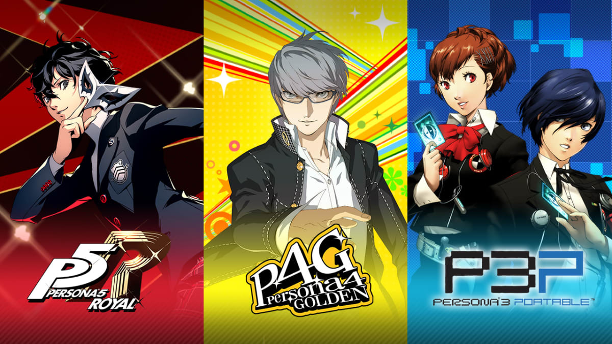
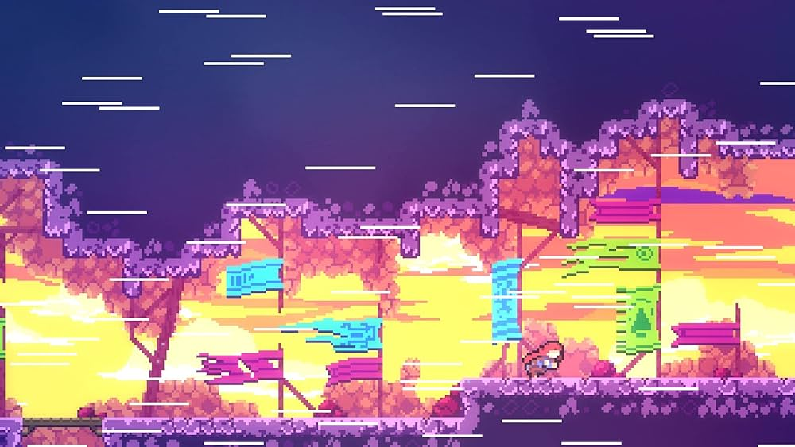
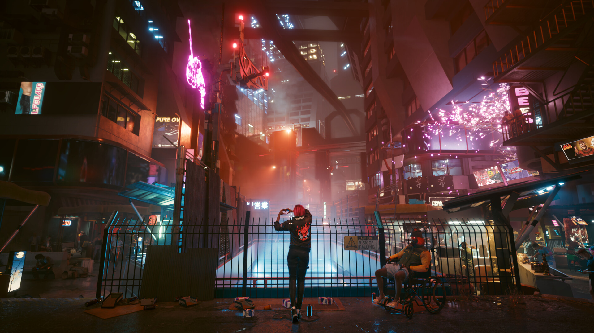

Introductie
Mijn naam is Luka. Ik ben 17 jaar en speel al best wel lang veel games. Door de tijd heen zijn er veel spellen die ik heb gespeeld die ik echt heel leuk vind. Dit kan meerdere redenen hebben: Bijvoorbeeld de Soundtrack, Story, Gameplay of Ambience.
De soundtrack van spellen vind ik eigenlijk iets wat heel erg overlooked word in de meeste spellen. Ik heb meerdere malen een spel gekocht omdat ik de muziek ervan mooi vond, zonder echt naar gameplay gekeken te hebben. Muziek kan een van de sterkste punten zijn in games, denk bijvoorbeeld aan De Persona Franchise. Ik behandel deze franchise op deze website in detail, maar zulke spellen profiteren heel erg van een goede soundtrack.
Op deze Website wil ik daarom door sommige spellen heen gaan die ik erg leuk vond. Dit doe ik met een kleine beschrijving van het spel, wat ik eraan leuk vond en screenshots of videos. De genres die ik ga behandelen zijn: Souls games, Visual novels, Platformers en als laatst Story games. Ik heb deze genres uitgekozen omdat ik vind dat ik hier genoeg spellen van heb gespeeld om een pagina aan te verwijten.

Ik speelde eerst op de wii U. deze console was alleen een mislukking in de ogen van nintendo, dus hij kreeg al snel geen support meer.Toen begon ik meer op PC te spelen. voornamelijk spellen van Activision Blizzard zoals Hearthstone, Heroes of the Storm en Diablo 3.Ik ben immidels met de meeste gestopt behalve Hearthstone.In de corona periode maakte ik een steam account aan. Hier probeer ik nu mn meeste games op te verzamelen zodat alles een beetje op een rij staat.
hieronder staan de links naar alle paginas, met een korte beschrijving.
Souls games
mijn favoriete Souls en soulslikes staan hier. Souls games zijn spellen die zich vooral focussen op de moeilijkheid. Vaak speel je in een donkere wereld, waar alles een beetje wegrot. zoals in dark souls. De werelden kunnen echter heel mooi zijn, zoals bijvoorbeeld in Elden Ring of Sekiro. souls likes zijn games die zich laten inspireren op deze spellen, en hun eigen draai eraan geven.
Visual novels
dectective spellen tot bartender spellen en meer!
Platformers
Een bekend genre, hier zijn 3 die ik leuk vond.
story games
Mijn favoriete story games staan hier.